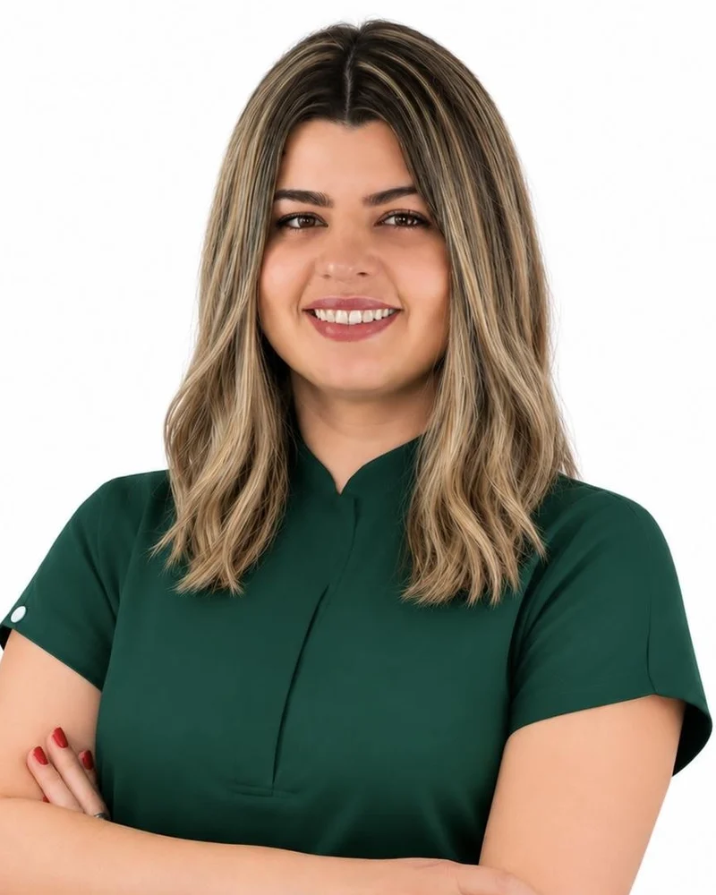

María Crespo
Odontóloga general
N.º col. 280011703
Especialidades · Salud oral
La salud oral es mucho más que unos dientes sin caries. Las encías, la mordida, la saliva y los hábitos diarios dicen mucho de cómo estás, y lo que ocurre en la boca puede influir en el resto del cuerpo.
En Lustro empezamos por aquí: revisamos, explicamos con calma lo que vemos y construimos contigo un plan de prevención realista, que puedas mantener.

Cuándo consultarnos
Exploración de dientes, encías, mordida y mucosas, con las pruebas de imagen que estén indicadas.
Eliminación de placa y sarro, y enseñanza personalizada de cepillado e higiene interdental.
Valoración periodontal, tratamiento de gingivitis y periodontitis y mantenimiento a largo plazo.
Frecuencia de revisiones según tu riesgo, pautas de flúor, dieta y hábitos.
Equipo
Odontóloga general
N.º col. 280011703

Odontóloga periodoncista
N.º col. 28016020
Salud oral
Información divulgativa. No sustituye a una consulta ni a un diagnóstico.
No. El sangrado suele indicar inflamación. En muchos casos mejora con una buena higiene y tratamiento profesional, pero conviene explorarlo.
Depende de tu riesgo. Como referencia habitual, una o dos veces al año; algunas personas con enfermedad de las encías necesitan controles más frecuentes.
Realizada correctamente, está pensada para retirar depósitos sin dañar el diente. Puede aparecer sensibilidad pasajera.
Otras áreas del Método Lustro.
Pide cita
Cuéntanos qué te interesa y cuándo te viene bien. La clínica te confirma la hora.